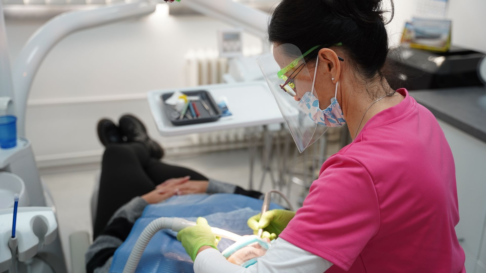
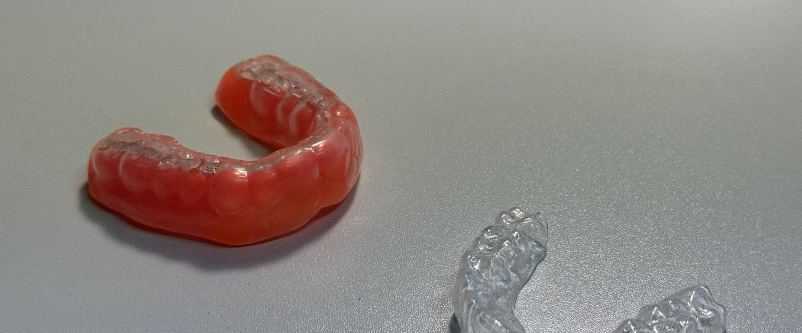
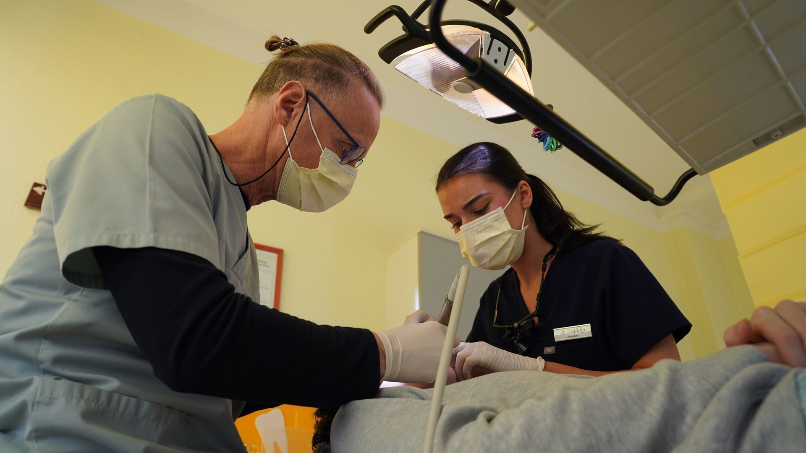
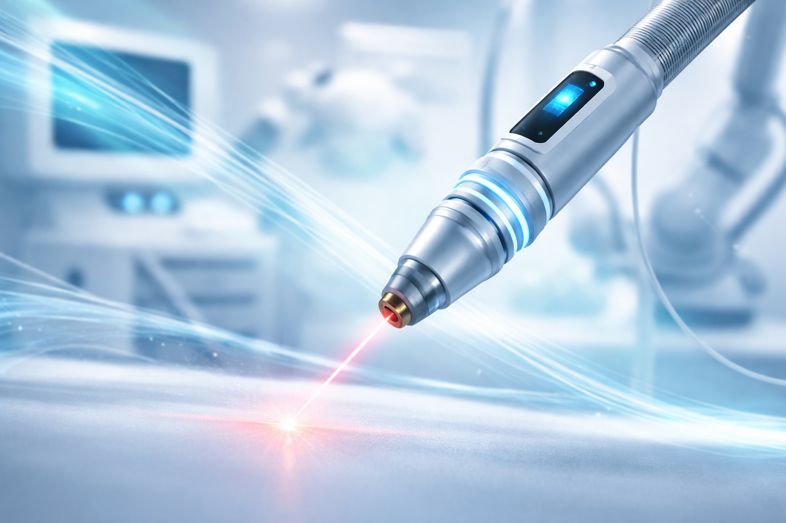
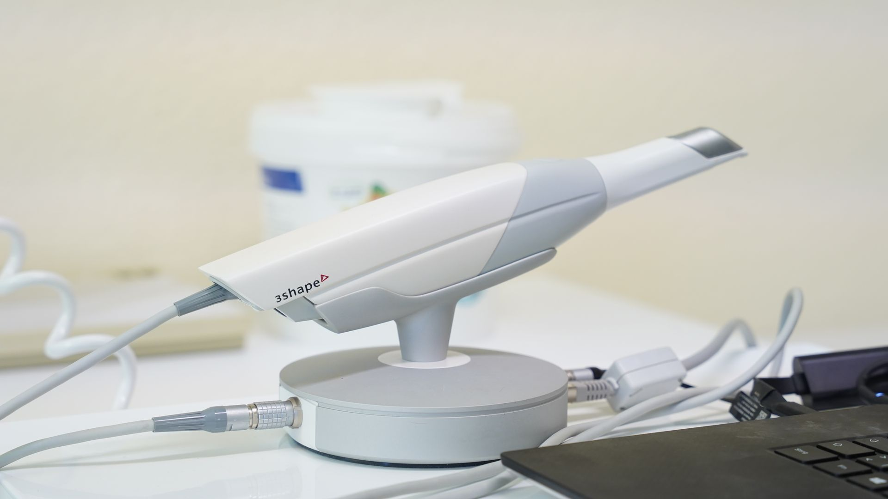
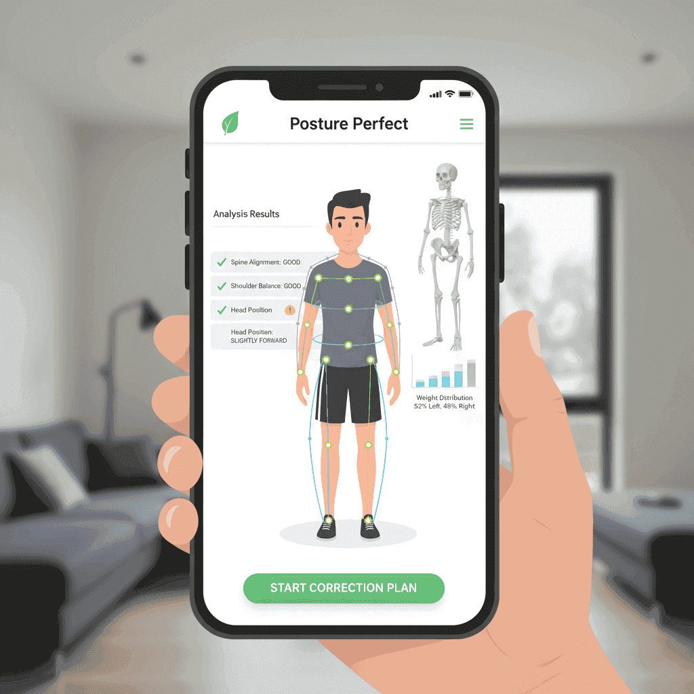

Unser Zusatzangebot
Neben der klassischen kieferorthopädischen Behandlung bieten wir spezialisierte Zusatzleistungen an, die Ihre Mundgesundheit und Ihr Wohlbefinden ganzheitlich verbessern. Diese Behandlungen ergänzen die orthodontische Therapie optimal und sorgen für langfristige Erfolge.
Schnellnavigation
Professionelle Zahnreinigung

Gerade während einer kieferorthopädischen Behandlung ist eine gründliche Mundhygiene besonders wichtig. Brackets, Drähte und andere Apparaturen bieten zusätzliche Nischen, in denen sich Beläge und Bakterien ansammeln können. Eine regelmäßige professionelle Zahnreinigung (PZR) beugt Karies, Zahnfleischentzündungen und Verfärbungen vor.
- Gründliche Entfernung von Plaque, Zahnstein und Verfärbungen
- Spezielle Reinigung um Brackets und unter Drähten
- Politur der Zahnoberflächen für ein glattes Gefühl
- Fluoridierung zum Schutz des Zahnschmelzes
- Individuelle Tipps zur häuslichen Mundhygiene mit Zahnspange
Empfehlung: Während der kieferorthopädischen Behandlung alle 3-4 Monate zur professionellen Zahnreinigung.
Sportmundschutz

Bei Kontaktsportarten wie Boxen, Kampfsport, Hockey, Basketball oder Fußball besteht ein erhöhtes Risiko für Zahnverletzungen. Ein individuell angefertigter Sportmundschutz bietet optimalen Schutz für Zähne, Lippen, Zunge und Kiefergelenk – und sitzt dabei deutlich besser als Produkte aus dem Sportgeschäft.
- Exakte Maßanfertigung nach präzisem Abdruck Ihrer Zähne
- Perfekter Sitz ohne Würgereiz – ermöglicht freies Atmen und Sprechen
- Stoßdämpfende Wirkung schützt vor Zahnfrakturen und Kieferverletzungen
- Besonders wichtig bei Zahnspangen: Schutz vor Verletzungen durch Brackets
- Individuelle Farbgestaltung möglich – auch in Vereinsfarben
Tipp: Bei Kindern und Jugendlichen im Wachstum sollte der Mundschutz regelmäßig erneuert werden.
Präventive Maßnahmen

Vorbeugen ist besser als Behandeln. Unsere präventiven Maßnahmen zielen darauf ab, Zahnerkrankungen zu verhindern, bevor sie entstehen. Besonders bei Kindern und Jugendlichen legen wir großen Wert auf frühzeitige Prophylaxe.
- Kariesrisikoanalyse: Individuelle Einschätzung des Kariesrisikos und gezielte Gegenmaßnahmen
- Fissurenversiegelung: Schutz der Kauflächen von Backenzähnen vor Karies – besonders bei Kindern empfohlen
- Ernährungsberatung: Tipps zur zahngesunden Ernährung und zum Umgang mit Zucker
- Mundhygiene-Schulung: Richtige Putztechnik, Anwendung von Zahnseide und Interdentalbürsten
- Fluoridierung: Stärkung des Zahnschmelzes durch lokale Fluoridanwendung
Laserchirurgische Eingriffe

Moderne Laserchirurgie ermöglicht präzise, minimalinvasive Eingriffe im Mundbereich. Der Laser arbeitet nahezu schmerzfrei, blutstillend und fördert eine schnelle Wundheilung.
Unsere laserchirurgischen Leistungen:
- Operkulektomie: Entfernung des Zahnfleischdeckels über teilweise durchgebrochenen Zähnen (häufig bei Weisheitszähnen)
- Frenektomie: Durchtrennung eines zu kurzen Lippen- oder Zungenbändchens zur Verbesserung der Beweglichkeit
- Gingivektomie: Entfernung überschüssigen Zahnfleisches für ästhetische oder funktionelle Korrekturen
- Freilegung retinierter Zähne: Chirurgische Freilegung von im Kiefer verborgenen Zähnen für die kieferorthopädische Einordnung
- Aphten-Behandlung: Schmerzlinderung und beschleunigte Heilung bei Mundschleimhautentzündungen
Vorteile der Laserchirurgie: Weniger Schmerzen, geringere Schwellung, schnellere Heilung und oft keine Naht erforderlich.
Kieferrelease

Viele Patienten mit CMD (Craniomandibuläre Dysfunktion) leiden unter akuten Beschwerden wie Kieferschmerzen, Verspannungen oder eingeschränkter Mundöffnung. Da Termine bei Physiotherapeuten oft mit langen Wartezeiten verbunden sind, bieten wir in unserer Praxis das Kieferrelease als sofortige Hilfe an.
Was ist Kieferrelease? Eine spezielle manuelle Therapie, bei der gezielte Handgriffe und Techniken angewendet werden, um die verspannte Kaumuskulatur zu lockern und das Kiefergelenk zu mobilisieren.
- Sofortige Schmerzlinderung bei akuten Kieferbeschwerden
- Lösung von Triggerpunkten in der Kaumuskulatur
- Verbesserung der Mundöffnung bei Kieferklemme
- Entspannung der Gesichts-, Nacken- und Schultermuskulatur
- Anleitung zu Eigenübungen für zu Hause
Ideal als Soforthilfe und zur Überbrückung bis zum Physiotherapie-Termin oder als begleitende Maßnahme zur Schienentherapie.
Digitaler 3D-Scanner

Herkömmliche Abdrücke mit Abformmasse lösen bei vielen Patienten einen unangenehmen Würgereiz aus – besonders bei empfindlichen Personen kann dies die Behandlung erheblich erschweren. Mit unserem digitalen 3D-Intraoralscanner gehört dieses Problem der Vergangenheit an.
Wie funktioniert es? Eine kleine Kamera wird berührungsarm über die Zahnreihen geführt und erstellt innerhalb weniger Minuten ein hochpräzises dreidimensionales Modell Ihrer Zähne und Kieferverhältnisse – ganz ohne Abdruckmasse.
- Kein Würgereiz – ideal für empfindliche Patienten und Kinder
- Schnell und komfortabel: Digitaler Scan in wenigen Minuten
- Höhere Präzision als herkömmliche Abdrücke mit Abformmasse
- Sofortige Visualisierung: Ergebnis direkt am Bildschirm sichtbar
- Nahtlose digitale Weiterverarbeitung für Schienen, Aligner und Retainer
- Umweltfreundlich: Kein Materialeinsatz und kein Abfall durch Einwegabdrucklöffel
Besonders geeignet für Patienten mit starkem Würgereiz, Kinder und alle, die eine angenehme und moderne Behandlung bevorzugen.
KI-gesteuerte Körperstatikanalyse

Körperhaltung und Kiefergelenk stehen in engem Zusammenhang. Eine Fehlstellung der Wirbelsäule, ein Beckenschiefstand oder Muskeldysbalancen können sich auf das Kiefergelenk auswirken – und umgekehrt. Mit modernster KI-Technologie analysieren wir Ihre Körperstatik präzise und erkennen Zusammenhänge, die für Ihre Behandlung relevant sind.
Wie funktioniert es? Mithilfe einer speziellen Kamera und künstlicher Intelligenz werden Fotos Ihrer Körperhaltung aus verschiedenen Perspektiven ausgewertet. Die Software erkennt Asymmetrien, Fehlhaltungen und muskuläre Dysbalancen.
- Präzise Vermessung der Körperhaltung in Sekunden
- Erkennung von Beckenschiefstand, Skoliose und Haltungsfehlern
- Ausführlicher Bericht mit visueller Darstellung der Befunde
- Individueller Übungsplan zur Korrektur von Fehlhaltungen
- Dokumentation des Behandlungsfortschritts durch Vergleichsmessungen
- Wichtige Grundlage für die interdisziplinäre Zusammenarbeit mit Physiotherapeuten und Orthopäden
Besonders empfohlen bei CMD-Patienten, chronischen Kopf- und Nackenschmerzen sowie vor Beginn einer kieferorthopädischen Behandlung.